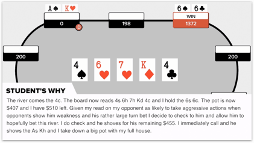
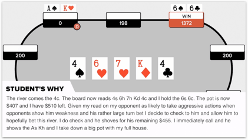

The 5 Main Reasons You Are Stuck at Good
1. When You Start to Move Away from ABC Poker… You Lose
Good players usually have a good understanding of solid ABC play. They understand position, relative hand strength, and are usually pretty decent at getting value from good hands. However, because they don’t have a fully developed and flexible thought process, they aren’t able to step out of this comfort zone. They find themselves limited to a more traditional form of playing because of the fact that every time they step out they tend to lose. It almost trains them to stick to playing basic, tight-aggressive poker.
2. The Confidence in Your Reads and the Inability to Follow Through
One of the major issues of good players is that they lack confidence. Sure every once in awhile they will make a great read or take a sick line but this is often very inconsistent, and it’s often with the comfort of pretty decent hands. Confidence does not always come from cards. It comes from knowing exactly where you are in a particular situation and having the ability to trust yourself to take the right course of action. This is something that good players struggle with.

3. Your Off-Table Understanding Doesn't Translate to In-Game Performance
This is probably the most interesting problem with good players. I call these “Gaps.” Gaps are when a player may be able to narrow an opponent's range or understand the correct line to take if they are given a lot of time and a pen and a paper. There is a gap between what they are capable of in theory and the level at which they can actually perform. And players are usually going to blame their gap issues on...
4. You Blame Way Too Much on Lack of Focus, Patience, Running Bad, or Game Selection
Most good players are decent enough to not complain about bad beats. But they always have other reasons for their lack of performance. “I am really good I just lose focus after 2 hours,” or “I play really well, I just run bad and lose and then I start playing poorly.” I hate to break it to you but… if you get affected by those little shifts in the game, it means you lack the ability to see those things coming, and don’t know yourself and your game well enough to hedge and account for those weaknesses. Most players’ higher level mistakes are masked by these types of problems. The number of players I have worked with who told me their only issue is tilt is absolutely insane. Tilt, focus, and attention are often giant masks for an inconsistent and rigid thought process.
5. Your Performance is Too Dependent on Sitting Down With The “Ideal” Type of Player
Sometimes you might have a session where you crush it and really play great poker. However, if you look closely you are going to find that these moments are often dependent on your opponents. You probably don’t have any issues playing against the really tight opponents or a specific type of aggressive player, but you struggle with players in between. You can probably determine preflop ranges for the players you are used to, but can’t adjust or figure out how to actually beat every table.
Why Being Good Isn’t Enough in 2017
The quick answer is by the questions you ask.. If you are asking any of the following questions your foundational understanding of the game is… well. broken..
Good is Everywhere
I can’t believe I am saying this… but good is now everywhere. When I started teaching poker, all you needed to be was good. In fact, 10-15 years ago, good was great. Players were making mistakes at such high frequencies, and their pre-flop games were so poor that it was much easier to make money. In 2016, good has become the average and the average player’s knowledge of the game has increased considerably. Put it this way: At the 2016 WSOP Main Event, in over 5 days of play, I didn’t see a single player limp. Not an exaggeration. In like 50 hours of play not one limp. 15 years ago people were limping left and right, and mistakes were everywhere. Now we need to rise above our opponents by making great reads on them, predicting their actions, and exploiting them to the max.
Being Good is a Waste of Time and Money
This might feel like a weird thing to say, because at this point it has probably taken you a fair amount of time and money to actually get to good, but it's the truth. The reality is the game has changed over the years and the resources that are available to poker players allow people to get to good quickly. Being good is no longer a significant edge over the field. In a sea of good players, you need to be great to make money.
If You Are Good, You Are Highly Predictable, Exploitable, and Easy to Play Against
You are good enough to narrow your range and be focused on position. You are good enough to not get out of line. But you are absolutely predictable and you end up folding to players who are great because they can clearly predict your weaknesses and usually your fears. The majority of my exploits come from attacking good players when I can accurately predict they will fold.
Good Play is Boring
You check the first card it's an ace, you get hit with that little excitement hoping the next card is going to be a face card and then you see a 3 and you get disappointed and fold. Good players know how to narrow their ranges, but they are more focused on their cards than actually playing poker. Great players are constantly looking for weaknesses in their opponents and figuring out how to exploit them. Waiting for cards is boring. Playing poker shouldn't be.


 
